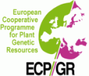

| Home | Search | Download | Description | Contributors | Species |
|
The International Lactuca Database Centre for Genetic Resources, The Netherlands (CGN) Database managers: Rob van Treuren and Frank Menting |
 |
The International Lactuca Database includes accessions of species belonging to the genus Lactuca, but also a few accessions belonging to related genera.
Passport data can be searched on-line or downloaded. Characterization and evaluation data can be accessed via the downloading section. Requests for seed material from accessions included in the database should be directed to the institute that maintains the accession. An overview of the holding institutes is provided in the section "contributors".
Database access
Further information
On-line - search
Passport descriptors
Off-line - download
Overview of contributors
Overview of included species
Comments and questions to: Frank Menting.